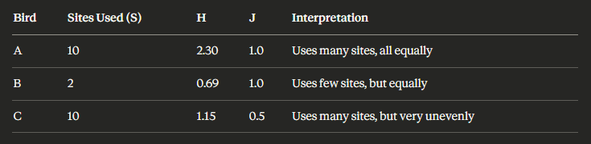

library(motus)
library(dplyr)
library(here)
library(ggplot2)
library(tidyr)
library(readr)
library(dplyr)
library(ggplot2)
library(vegan)
library(philentropy)
library(gridExtra)
library(gt)Site use: Entropy, Eveness & Composition
Load your data in your R environment - see Load & Format > Reproducibility
Shannon
Definition
Shannon entropy (H) (Shannon and Weaver -1949 ;Lou Jost - 2006) is used to quantify the diversity of an individual’s site use. It measures the dispersion of an individual’s site use pattern to answers: How evenly does this bird distribute its time/detections across different sites?
\[ \text{H} = -Σ(p_i × ln(p_i)) \] \[ \text{where } p_i \text{ is the proportion of detections at site } i \]
Interpretation
A lower entropy goes with more concentrated use (higher site fidelity to few sites) and a higher entropy matches a more dispersed use (lower site fidelity, using many sites equally).
Low Entropy (e.g., H < 1.0)
- Individual is highly specialized
- Uses only a few sites, or uses one site predominantly
- High site fidelity to specific locations
- Low unpredictability: we can predict where the bird will be
High Entropy (e.g., H > 2.0)
- Individual is generalized
- Uses many sites relatively equally
- Low site fidelity to any particular location
- High unpredictability: harder to predict where the bird will be
Effective Number of Sites (exp(H))
This transforms entropy into an interpretable number: the “effective number of equally-used sites”
Example: - If H = 1.61, then exp(1.61) ≈ 5 effective sites - Interpretation: The bird uses sites as if it were splitting time equally among 5 sites (even if it actually uses 10 sites, but with uneven distribution)
Pielou’s Evenness (J = H / ln(S))
Evenness ranges from 0 to 1, where S = total number of sites used by that individual:
- J close to 1: Individual uses all sites equally
- J close to 0: Individual uses sites very unequally (dominates few sites)

Table: Summary of the entropy values with examples.
First, we define a all-in-one function to consistently computing shannon entropy.
# Function to calculate Shannon entropy
calculate_shannon <- function(proportions) {
# Remove zero proportions (shouldn't be any, but safety check)
p <- proportions[proportions > 0]
# Calculate Shannon entropy: H = -sum(p * ln(p))
H <- -sum(p * log(p))
return(H)
}Then we can proceed. Starting with simply counting the number of detection an individual has recorded in each stations, then extracting the proportions to finally calculate the entropy (H).
# Calculate entropy metrics for each Band.ID
entropy_results <- data_all %>%
# Remove any NA values in Band.ID or recvSiteName
filter(!is.na(Band.ID), !is.na(recvDeployName)) %>%
# Count detections per bird per site
group_by(speciesEN, Band.ID, recvDeployName) %>%
summarise(detections = n(), .groups = "drop") %>%
# Calculate proportions for each bird
group_by(speciesEN, Band.ID) %>%
mutate(
total_detections = sum(detections),
proportion = detections / total_detections
) %>%
# Calculate metrics for each bird
summarise(
S = n(), # Number of sites used
H = round(calculate_shannon(proportion), 2), # Shannon entropy
J = round(H / log(S), 2), # Pielou's evenness
total_detections = first(total_detections), # Total detections for reference
.groups = "drop"
) %>%
# Add effective number of sites (exp(H))
mutate(
exp_H = exp(H) # Effective number of equally-used sites
) %>%
# Arrange by Band.ID
arrange(speciesEN, Band.ID)Results
| Table 2. Shannon entropy metrics for site use patterns of shorebird species in the Hunter estuary. | |||||||||||||||
|---|---|---|---|---|---|---|---|---|---|---|---|---|---|---|---|
| Species (En.) |
Sample
|
Number of Sites (S)
|
Shannon Entropy (H)
|
Pielou's Evenness (J)
|
Effective Sites [exp(H)]
|
||||||||||
| N individuals | Total detections | Median S | Mean S | SD S | Median H | Mean H | SD H | CV H (%) | Median J | Mean J | SD J | Median exp(H) | Mean exp(H) | SD exp(H) | |
| Bar-tailed Godwit | 9 | 132,188 | 3.00 | 2.33 | 0.87 | 0.58 | 0.43 | 0.33 | 76.4 | 0.60 | 0.57 | 0.28 | 1.79 | 1.60 | 0.49 |
| Curlew Sandpiper | 5 | 276,960 | 6.00 | 5.60 | 0.55 | 0.10 | 0.11 | 0.02 | 21.3 | 0.06 | 0.07 | 0.01 | 1.11 | 1.12 | 0.03 |
| Eurasian Whimbrel | 2 | 5,978 | 2.50 | 2.50 | 0.71 | 0.45 | 0.45 | 0.51 | 113.1 | 0.43 | 0.44 | 0.43 | 1.67 | 1.67 | 0.82 |
| Far Eastern Curlew | 1 | 72,053 | 2.00 | 2.00 | NA | 0.04 | 0.04 | NA | NA | 0.06 | 0.06 | NA | 1.04 | 1.04 | NA |
| Masked Lapwing | 1 | 99 | 1.00 | 1.00 | NA | 0.00 | 0.00 | NA | NA | NA | NaN | NA | 1.00 | 1.00 | NA |
| Pacific Golden-Plover | 14 | 1,281,139 | 5.50 | 5.21 | 1.76 | 0.09 | 0.23 | 0.27 | 115.4 | 0.09 | 0.14 | 0.15 | 1.10 | 1.31 | 0.38 |
| Pied Stilt | 6 | 883,921 | 2.00 | 2.33 | 1.51 | 0.25 | 0.30 | 0.36 | 121.0 | 0.36 | 0.40 | 0.15 | 1.29 | 1.43 | 0.61 |
| Red-necked Avocet | 3 | 110,210 | 6.00 | 5.00 | 1.73 | 0.85 | 0.88 | 0.06 | 6.5 | 0.53 | 0.59 | 0.16 | 2.34 | 2.42 | 0.14 |
| Legend. Grouped by species, this table summarises site fidelity metrics using Shannon entropy analysis. n_individuals: number of tagged individuals; S: number of unique sites used; H: Shannon entropy (dispersion of site use, higher = more generalised); J: Pielou’s evenness (0-1, higher = more even site use); exp(H): effective number of equally-used sites; CV_H: coefficient of variation in H (% individual variation within species); total_detections: total number of detections across all individuals. Mean and standard deviation values are provided (x̄ ± SD). Median values represent the central tendency across individuals within each species. | |||||||||||||||
# Prepare data for plotting
entropy_for_plot <- entropy_results %>%
select(speciesEN, Band.ID, S, H, J, exp_H) %>%
pivot_longer(
cols = c(S, H, J, exp_H),
names_to = "metric",
values_to = "value" ) %>%
mutate( metric = factor(metric,
levels = c("S", "H", "J", "exp_H"),
labels = c("S (Number of Sites)",
"H (Shannon Entropy)",
"J (Pielou's Evenness)",
"exp(H) (Effective Sites)")))
# Create the boxplot
ggplot(entropy_for_plot, aes(x = speciesEN, y = value, fill = speciesEN)) +
geom_boxplot(alpha = 0.7, outlier.shape = 16) +
geom_jitter(width = 0.2, alpha = 0.3, size = 1) +
facet_wrap(~ metric, scales = "free_y", ncol = 2) +
scale_fill_manual(values = species_colors) +
labs(
title = "Shannon Entropy Metrics by Species",
subtitle = "Distribution of site use patterns across individuals",
x = "Species",
y = "Value",
fill = "Species") +
theme_minimal() +
theme(
axis.text.x = element_text(angle = 45, hjust = 1, size = 9),
strip.text = element_text(face = "bold", size = 11),
legend.position = "none",
panel.grid.major.x = element_blank())
| S - Number of Sites Used | ||
|---|---|---|
| Species | Band ID | S |
| Bar-tailed Godwit | 7176824 | 3 |
| Bar-tailed Godwit | 7394014 | 1 |
| Bar-tailed Godwit | 7394017 | 2 |
| Bar-tailed Godwit | 7394018 | 1 |
| Bar-tailed Godwit | 7394019 | 2 |
| Bar-tailed Godwit | 7394026 | 3 |
| Bar-tailed Godwit | 7394027 | 3 |
| Bar-tailed Godwit | 7394032 | 3 |
| Bar-tailed Godwit | 8345053 | 3 |
| Curlew Sandpiper | 4281407 | 6 |
| Curlew Sandpiper | 4281408 | 6 |
| Curlew Sandpiper | 4281409 | 5 |
| Curlew Sandpiper | 4281410 | 5 |
| Curlew Sandpiper | 4281420 | 6 |
| Eurasian Whimbrel | 8345054 | 3 |
| Eurasian Whimbrel | 8345055 | 2 |
| Far Eastern Curlew | 10118806 | 2 |
| Masked Lapwing | 8295845 | 1 |
| Pacific Golden-Plover | 6318617 | 6 |
| Pacific Golden-Plover | 6318618 | 7 |
| Pacific Golden-Plover | 6318619 | 4 |
| Pacific Golden-Plover | 6318620 | 6 |
| Pacific Golden-Plover | 6318621 | 7 |
| Pacific Golden-Plover | 6318624 | 7 |
| Pacific Golden-Plover | 6318625 | 5 |
| Pacific Golden-Plover | 6318626 | 5 |
| Pacific Golden-Plover | 6318627 | 7 |
| Pacific Golden-Plover | 6318629 | 6 |
| Pacific Golden-Plover | 6318630 | 3 |
| Pacific Golden-Plover | 6318633 | 4 |
| Pacific Golden-Plover | 6318635 | 1 |
| Pacific Golden-Plover | 6318799 | 5 |
| Pied Stilt | 8295770 | 3 |
| Pied Stilt | 8295772 | 1 |
| Pied Stilt | 8295773 | 2 |
| Pied Stilt | 8295774 | 5 |
| Pied Stilt | 8295775 | 1 |
| Pied Stilt | 8295776 | 2 |
| Red-necked Avocet | 8295778 | 3 |
| Red-necked Avocet | 8295780 | 6 |
| Red-necked Avocet | 8295781 | 6 |
| H - Shannon Entropy | ||
|---|---|---|
| Species | Band ID | H |
| Bar-tailed Godwit | 7176824 | 0.58 |
| Bar-tailed Godwit | 7394014 | 0.00 |
| Bar-tailed Godwit | 7394017 | 0.69 |
| Bar-tailed Godwit | 7394018 | 0.00 |
| Bar-tailed Godwit | 7394019 | 0.26 |
| Bar-tailed Godwit | 7394026 | 0.66 |
| Bar-tailed Godwit | 7394027 | 0.79 |
| Bar-tailed Godwit | 7394032 | 0.13 |
| Bar-tailed Godwit | 8345053 | 0.72 |
| Curlew Sandpiper | 4281407 | 0.10 |
| Curlew Sandpiper | 4281408 | 0.15 |
| Curlew Sandpiper | 4281409 | 0.09 |
| Curlew Sandpiper | 4281410 | 0.10 |
| Curlew Sandpiper | 4281420 | 0.12 |
| Eurasian Whimbrel | 8345054 | 0.81 |
| Eurasian Whimbrel | 8345055 | 0.09 |
| Far Eastern Curlew | 10118806 | 0.04 |
| Masked Lapwing | 8295845 | 0.00 |
| Pacific Golden-Plover | 6318617 | 0.02 |
| Pacific Golden-Plover | 6318618 | 0.04 |
| Pacific Golden-Plover | 6318619 | 0.01 |
| Pacific Golden-Plover | 6318620 | 0.03 |
| Pacific Golden-Plover | 6318621 | 0.55 |
| Pacific Golden-Plover | 6318624 | 0.73 |
| Pacific Golden-Plover | 6318625 | 0.52 |
| Pacific Golden-Plover | 6318626 | 0.20 |
| Pacific Golden-Plover | 6318627 | 0.32 |
| Pacific Golden-Plover | 6318629 | 0.66 |
| Pacific Golden-Plover | 6318630 | 0.01 |
| Pacific Golden-Plover | 6318633 | 0.04 |
| Pacific Golden-Plover | 6318635 | 0.00 |
| Pacific Golden-Plover | 6318799 | 0.14 |
| Pied Stilt | 8295770 | 0.29 |
| Pied Stilt | 8295772 | 0.00 |
| Pied Stilt | 8295773 | 0.30 |
| Pied Stilt | 8295774 | 0.97 |
| Pied Stilt | 8295775 | 0.00 |
| Pied Stilt | 8295776 | 0.21 |
| Red-necked Avocet | 8295778 | 0.85 |
| Red-necked Avocet | 8295780 | 0.95 |
| Red-necked Avocet | 8295781 | 0.85 |
| J - Pielou’s Evenness | ||
|---|---|---|
| Species | Band ID | J |
| Bar-tailed Godwit | 7176824 | 0.53 |
| Bar-tailed Godwit | 7394014 | NaN |
| Bar-tailed Godwit | 7394017 | 1.00 |
| Bar-tailed Godwit | 7394018 | NaN |
| Bar-tailed Godwit | 7394019 | 0.38 |
| Bar-tailed Godwit | 7394026 | 0.60 |
| Bar-tailed Godwit | 7394027 | 0.72 |
| Bar-tailed Godwit | 7394032 | 0.12 |
| Bar-tailed Godwit | 8345053 | 0.66 |
| Curlew Sandpiper | 4281407 | 0.06 |
| Curlew Sandpiper | 4281408 | 0.08 |
| Curlew Sandpiper | 4281409 | 0.06 |
| Curlew Sandpiper | 4281410 | 0.06 |
| Curlew Sandpiper | 4281420 | 0.07 |
| Eurasian Whimbrel | 8345054 | 0.74 |
| Eurasian Whimbrel | 8345055 | 0.13 |
| Far Eastern Curlew | 10118806 | 0.06 |
| Masked Lapwing | 8295845 | NaN |
| Pacific Golden-Plover | 6318617 | 0.01 |
| Pacific Golden-Plover | 6318618 | 0.02 |
| Pacific Golden-Plover | 6318619 | 0.01 |
| Pacific Golden-Plover | 6318620 | 0.02 |
| Pacific Golden-Plover | 6318621 | 0.28 |
| Pacific Golden-Plover | 6318624 | 0.38 |
| Pacific Golden-Plover | 6318625 | 0.32 |
| Pacific Golden-Plover | 6318626 | 0.12 |
| Pacific Golden-Plover | 6318627 | 0.16 |
| Pacific Golden-Plover | 6318629 | 0.37 |
| Pacific Golden-Plover | 6318630 | 0.01 |
| Pacific Golden-Plover | 6318633 | 0.03 |
| Pacific Golden-Plover | 6318635 | NaN |
| Pacific Golden-Plover | 6318799 | 0.09 |
| Pied Stilt | 8295770 | 0.26 |
| Pied Stilt | 8295772 | NaN |
| Pied Stilt | 8295773 | 0.43 |
| Pied Stilt | 8295774 | 0.60 |
| Pied Stilt | 8295775 | NaN |
| Pied Stilt | 8295776 | 0.30 |
| Red-necked Avocet | 8295778 | 0.77 |
| Red-necked Avocet | 8295780 | 0.53 |
| Red-necked Avocet | 8295781 | 0.47 |
| exp(H) - Effective Number of Sites | ||
|---|---|---|
| Species | Band ID | exp(H) |
| Bar-tailed Godwit | 7176824 | 1.79 |
| Bar-tailed Godwit | 7394014 | 1.00 |
| Bar-tailed Godwit | 7394017 | 1.99 |
| Bar-tailed Godwit | 7394018 | 1.00 |
| Bar-tailed Godwit | 7394019 | 1.30 |
| Bar-tailed Godwit | 7394026 | 1.93 |
| Bar-tailed Godwit | 7394027 | 2.20 |
| Bar-tailed Godwit | 7394032 | 1.14 |
| Bar-tailed Godwit | 8345053 | 2.05 |
| Curlew Sandpiper | 4281407 | 1.11 |
| Curlew Sandpiper | 4281408 | 1.16 |
| Curlew Sandpiper | 4281409 | 1.09 |
| Curlew Sandpiper | 4281410 | 1.11 |
| Curlew Sandpiper | 4281420 | 1.13 |
| Eurasian Whimbrel | 8345054 | 2.25 |
| Eurasian Whimbrel | 8345055 | 1.09 |
| Far Eastern Curlew | 10118806 | 1.04 |
| Masked Lapwing | 8295845 | 1.00 |
| Pacific Golden-Plover | 6318617 | 1.02 |
| Pacific Golden-Plover | 6318618 | 1.04 |
| Pacific Golden-Plover | 6318619 | 1.01 |
| Pacific Golden-Plover | 6318620 | 1.03 |
| Pacific Golden-Plover | 6318621 | 1.73 |
| Pacific Golden-Plover | 6318624 | 2.08 |
| Pacific Golden-Plover | 6318625 | 1.68 |
| Pacific Golden-Plover | 6318626 | 1.22 |
| Pacific Golden-Plover | 6318627 | 1.38 |
| Pacific Golden-Plover | 6318629 | 1.93 |
| Pacific Golden-Plover | 6318630 | 1.01 |
| Pacific Golden-Plover | 6318633 | 1.04 |
| Pacific Golden-Plover | 6318635 | 1.00 |
| Pacific Golden-Plover | 6318799 | 1.15 |
| Pied Stilt | 8295770 | 1.34 |
| Pied Stilt | 8295772 | 1.00 |
| Pied Stilt | 8295773 | 1.35 |
| Pied Stilt | 8295774 | 2.64 |
| Pied Stilt | 8295775 | 1.00 |
| Pied Stilt | 8295776 | 1.23 |
| Red-necked Avocet | 8295778 | 2.34 |
| Red-necked Avocet | 8295780 | 2.59 |
| Red-necked Avocet | 8295781 | 2.34 |
Jensen-Shannon
Definition
\[ \text{H} = -Σ(p_i × ln(p_i)) \] \[ \text{where } p_i \text{ is the proportion of detections at site } i \]
Interpretation
Effective Number of Sites (exp(H))
Pielou’s Evenness (J = H / ln(S))
Comparing Individuals Within Species:
Statistical Tests:

Table: Summary of the entropy values with exemples.
First,